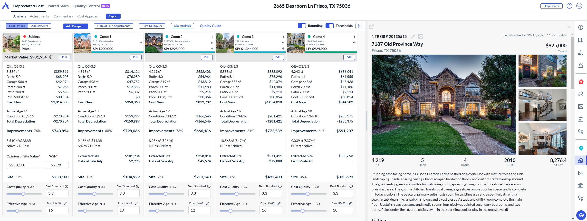
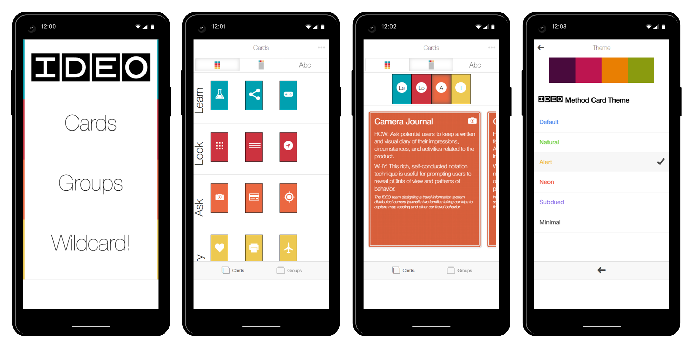

Progress Tracker
Designed customer touchpoints that made product
authenticity and order visibility easier to understand.
A decade designing operational, trust, and AI-assisted systems across Amazon, Microsoft, startups, and SaaS — focused on measurable outcomes over visual noise.
Increased purchase rates 2% and reduced returns 6% through improved trust UX.*
*For brands and products enrolled in the Transparency program.

Modernized appraisal workflows with AI-assisted tooling.

A redesign focused on navigation, hierarchy, and clarity.

AI-assisted news aggregation and summarization.
Built Tabum.org, a news platform that pulls from diverse sources, generates concise summaries, and highlights patterns across coverage.
Experience across enterprise platforms, startups, education, and patented product work.
“Graphical excellence is that which gives to the viewer the greatest number of ideas in the shortest time with the least ink in the smallest space.”
Edward Tufte